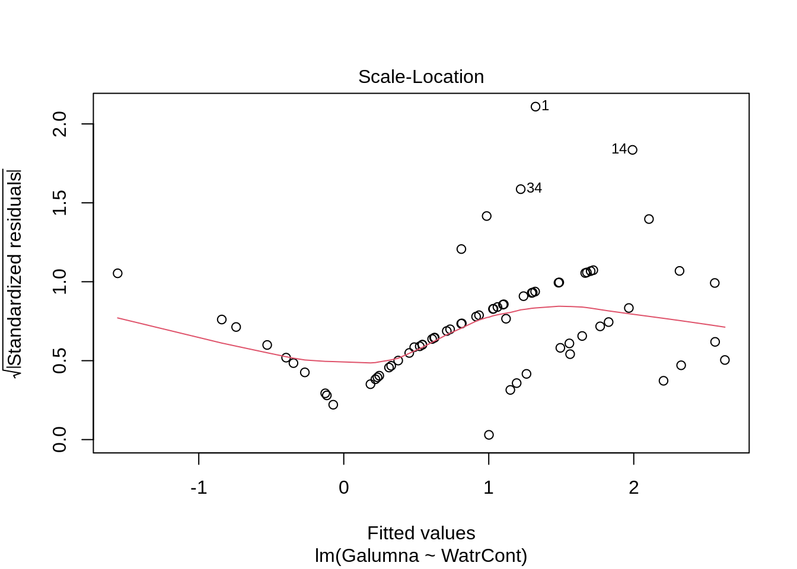
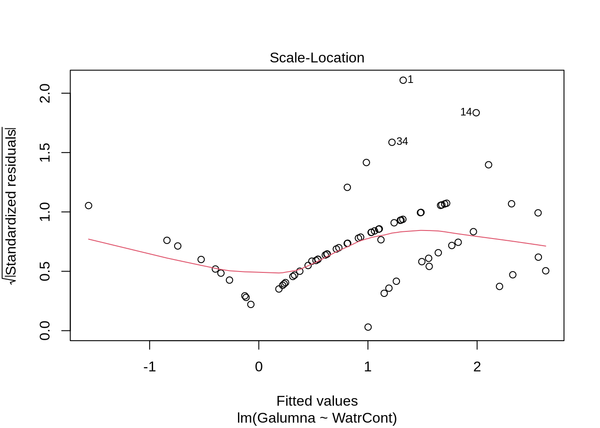

Chapitre 3 Révision des modèles linéaires
La plupart de nos recherches tentent d’expliquer des tendances dans nos observations à l’aide de variables prédictives.
Nous cherchons souvent une fonction \(f\) qui explique une variable réponse ( \(Y\) ) en fonction d’une ( \(X_1\) ) ou de plusieurs variables prédictives ( \(X_2\), \(X_3\), \(...\), \(X_n\) ):
\[Y = f(X_1)\] L’ensemble de variables prédictives que nous avons mesuré ne pourra jamais complètement expliquer notre variable \(Y\). Il y a une variation imprévisible dans nos modèles, i.e. l’erreur \(\epsilon\), qui fera toujours partie de notre fonction:
\[Y = f(X_1, \epsilon)\] Dans l’atelier 4, nous avons appris comment utiliser les modèles linéaires généraux pour décrire la relation entre variables. Ces modèles comportent les test de \(t\), les analyses de variances (ANOVA), les régressions linéaires (simple ou avec plusieurs variables prédictrices) et les analyses de covariance (ANCOVA).
3.1 Modèles linéaires généraux
3.1.1 Définition
La formule générale de notre fonction linéaire \(Y = f(X_1)\) serait représentée comme:
\[Y = \beta_0 + \beta_1X_i + \varepsilon\]
où:
\(Y_i\) est la valeur prédite de la variable réponse
\(\beta_0\) est le coefficient inconnu de l’ordonnée à l’origine
\(\beta_1\) est le coefficient inconnu de la pente
\(X_i\) est la valeur de la variable explicative
\(\varepsilon_i\) représente les résidus du modèle obtenus d’une distribution normale de moyenne 0 et de variance constante (qui est à estimer).
3.1.2 Conditions d’utilisation
Nous avons aussi appris que les modèles linéaires produisent seulement des estimateurs non-biaisés (c’est-à-dire, sont seulement fiables) si ils suivent quelques conditions. Notamment:
1. La population peut être décrite par une relation linéaire:
\[Y = \beta_0 + \beta_1X_i + \varepsilon\]
2. Le terme d’erreur \(\varepsilon\) a la même variance quelque soit la valeur de la variable explicative (c’est-à-dire, l’homoscédasticité), et les termes d’erreur ne sont pas corrélés entre les observations (donc, il n’y a pas d’autocorrélation).
\[\mathbb{V}{\rm ar} (\epsilon_i | \mathbf{X} ) = \sigma^2_\epsilon,\ \forall i = 1,..,N\] et,
\[\mathbb{C}{\rm ov} (\epsilon_i, \epsilon_j) = 0,\ i \neq j\]
3. Les résidus suivent une distribution normale:
\[\boldsymbol{\varepsilon} | \mathbf{X} \sim \mathcal{N} \left( \mathbf{0}, \sigma^2_\epsilon \mathbf{I} \right)\]
Les estimations d’un modèle général linéaire telles que \(\widehat{Y} = \widehat{\beta}_0 + \widehat{\beta}_1 X\) assumemt que les données sont générées selon les conditions présentées.

3.2 Un exemple avec les modèles linéaires généraux
Simulons 250 unités d’observation qui satisfaient nos conditions d’application: \(\epsilon_i \sim \mathcal{N}(0, 2^2), i = 1,...,250\).
nSamples <- 250
ID <- factor(c(seq(1:nSamples)))
PredVar <- runif(nSamples, min = 0, max = 50)
simNormData <- data.frame(ID = ID, PredVar = PredVar, RespVar = (2 *
PredVar + rnorm(nSamples, mean = 0, sd = 2)))
lm.simNormData <- lm(RespVar ~ PredVar, data = simNormData)
Ces graphiques permettent de vérifier les conditions d’application de la linéarité et l’homoscédasticité.
Le graphique QQ permet la comparaison des résidus avec une distribution normal.
Scale-location plot (la racine carré des résidus standardisés vs. valeur prédite) est utile pour vérifier l’homoscédasticité;
La distance de Cook est une mesure d’influence des observations sur le coefficient de la régression linéaire et permet d’identifier des données aberrantes.
Les résidus équivaut \(Y-\widehat{Y}\), soit la valeur observée par la valeur prédite par le modèle.
Les données aberrantes sont des observations avec des résidus larges, i.e. la valeur observée (\(Y\)) pour un point (\(x\)) est très différente de la valeur prédite par le modèle linéaire (\(\widehat{Y}\)).
Un point de levier est défini comme une observation \(Y\) qui a une valeur de \(x\) qui est très éloignée de la moyenne de \(x\).
Une observation influente est défini par une observation \(Y\) qui change la pente de la relation \(\beta_1\). Donc, un point influent va avoir une influence élevée sur la prédiction du modèle. Une méthode pour trouver des observations influentes est de comparer un modèle avec et sans la dite observation.
3.3 Un exemple avec des vrais données des modèles linéaires généraux
Utilisons nos connaissances des modèles linéaires généraux pour explorer la relation entre les variables dans le jeu de données de mites Orbatid.
Commençons par charger les données dans R:
# Use setwd() to set your working directory
mites <- read.csv("data/mites.csv", stringsAsFactors = TRUE)Le jeu de données que vous avez chargé est un échantillon du jeu de données mites Oribatid (Acari,Oribatei), qui a été utilsé pour plusieurs textes (e.g. Borcard,
Gillet & Legendre, Numerical Ecology with R), et est disponible avec le package vegan.
Le jeu de données mites contient 70 échantillons de mousses et mites récoltés par la Station de Biologie de l’Université de Montréal.
] provenant de la municipalité de Saint-Hippolyte, Québec (Canada). Il contient 5 variables environmentales, l’abondance de la mite Galumna sp., et l’abondance totale des mites.
Nous pouvons examiner la structure du jeu de données avec les fonctions head() and str() functions:
## Galumna pa totalabund prop SubsDens WatrCont Substrate Shrub Topo
## 1 8 1 140 0.057142857 39.18 350.15 Sphagn1 Few Hummock
## 2 3 1 268 0.011194030 54.99 434.81 Litter Few Hummock
## 3 1 1 186 0.005376344 46.07 371.72 Interface Few Hummock
## 4 1 1 286 0.003496503 48.19 360.50 Sphagn1 Few Hummock
## 5 2 1 199 0.010050251 23.55 204.13 Sphagn1 Few Hummock
## 6 1 1 209 0.004784689 57.32 311.55 Sphagn1 Few Hummock## 'data.frame': 70 obs. of 9 variables:
## $ Galumna : int 8 3 1 1 2 1 1 1 2 5 ...
## $ pa : int 1 1 1 1 1 1 1 1 1 1 ...
## $ totalabund: int 140 268 186 286 199 209 162 126 123 166 ...
## $ prop : num 0.05714 0.01119 0.00538 0.0035 0.01005 ...
## $ SubsDens : num 39.2 55 46.1 48.2 23.6 ...
## $ WatrCont : num 350 435 372 360 204 ...
## $ Substrate : Factor w/ 7 levels "Barepeat","Interface",..: 4 3 2 4 4 4 4 2 3 4 ...
## $ Shrub : Factor w/ 3 levels "Few","Many","None": 1 1 1 1 1 1 1 2 2 2 ...
## $ Topo : Factor w/ 2 levels "Blanket","Hummock": 2 2 2 2 2 2 2 1 1 2 ...Notre première vue su jeu de données nous permet déjà de séparer les variables potentielles en variables réponses ou variables prédictrices:
Variables réponses:
- Occurrence:
pa - Abondance:
Galumna - Fréquence relative ou Proportions:
prop
Variables prédictrices:
- Densité du substrat:
SubsDens - Contenu en eau (du sol):
WatrCont - Substrat:
Substrate - Arbustes:
Shrub - Topographie:
Topo
Quelles questions pouvons-nous poser avec ces variables?
Est-ce que l’environnement permet de prédire l’abondance, l’occurrence, ou la proportion de Galumna sp.?
Pour répondre à ces questions nous pouvons élaborer plusieurs fonctions:
\(\text{Abondance} = f(\text{Contenu en eau}, \epsilon)\)
\(\text{Proportion} = f(\text{Contenu en eau}, \epsilon)\)
\(\text{Occurrence} = f(\text{Substrat}, \epsilon)\)
\(\text{Abondance} = f(\text{Topographie}, \epsilon)\)
\(\text{Occurrence} = f(\text{Arbustes}, \epsilon)\)
\(\text{Fréquence relative} = f(\text{Topographie}, \epsilon)\)
\(\text{Occurrence} = f(\text{Densité du substrat}, \epsilon)\)
\(\text{Abondance} = f(\text{Substrat}, \epsilon)\) ]
Pouvons-nous voir une relation entre Galumna et une ou plusieurs des cinq variables environnementales?
Essayons en cherchant si la communauté de Galumna (abondance, occurrence and fréquence relative) varie en fonction du contenu en eau.
Nous pouvons commencer en représentant les trois varaibles réponses avec la variable prédictrice:


En effet, Galumna semble varier négativement avec la fonction de WatrCont, i.e. Galumna sp. préfèrerait des sites plus secs.
Nous pouvons aller plus loin encore en testant un modèle linéaire avec Galumna, pa, ou prop en fonction de WatrCont
# Fit the models
##
# Abundance model
lm.abund <- lm(Galumna ~ WatrCont, data = mites)
##
# Presence-absence model
lm.pa <- lm(pa ~ WatrCont, data = mites)
##
# Proportion model
lm.prop <- lm(prop ~ WatrCont, data = mites)Nous pouvons vérifier si la relation est significative avec sa sortie du modèle:
##
## Call:
## lm(formula = Galumna ~ WatrCont, data = mites)
##
## Residuals:
## Min 1Q Median 3Q Max
## -1.7210 -0.8236 -0.3270 0.3910 6.6772
##
## Coefficients:
## Estimate Std. Error t value Pr(>|t|)
## (Intercept) 3.439349 0.555825 6.188 3.98e-08 ***
## WatrCont -0.006045 0.001280 -4.723 1.21e-05 ***
## ---
## Signif. codes: 0 '***' 0.001 '**' 0.01 '*' 0.05 '.' 0.1 ' ' 1
##
## Residual standard error: 1.514 on 68 degrees of freedom
## Multiple R-squared: 0.247, Adjusted R-squared: 0.2359
## F-statistic: 22.31 on 1 and 68 DF, p-value: 1.206e-05##
## Call:
## lm(formula = pa ~ WatrCont, data = mites)
##
## Residuals:
## Min 1Q Median 3Q Max
## -0.61320 -0.30889 -0.05498 0.30247 0.80073
##
## Coefficients:
## Estimate Std. Error t value Pr(>|t|)
## (Intercept) 1.1892142 0.1431306 8.309 6.03e-12 ***
## WatrCont -0.0020263 0.0003296 -6.148 4.68e-08 ***
## ---
## Signif. codes: 0 '***' 0.001 '**' 0.01 '*' 0.05 '.' 0.1 ' ' 1
##
## Residual standard error: 0.3897 on 68 degrees of freedom
## Multiple R-squared: 0.3573, Adjusted R-squared: 0.3478
## F-statistic: 37.8 on 1 and 68 DF, p-value: 4.677e-08##
## Call:
## lm(formula = prop ~ WatrCont, data = mites)
##
## Residuals:
## Min 1Q Median 3Q Max
## -0.010208 -0.004927 -0.002056 0.003240 0.049252
##
## Coefficients:
## Estimate Std. Error t value Pr(>|t|)
## (Intercept) 2.020e-02 3.294e-03 6.133 4.98e-08 ***
## WatrCont -3.516e-05 7.586e-06 -4.635 1.67e-05 ***
## ---
## Signif. codes: 0 '***' 0.001 '**' 0.01 '*' 0.05 '.' 0.1 ' ' 1
##
## Residual standard error: 0.008971 on 68 degrees of freedom
## Multiple R-squared: 0.2401, Adjusted R-squared: 0.2289
## F-statistic: 21.49 on 1 and 68 DF, p-value: 1.665e-05## (Intercept) WatrCont
## 3.981563e-08 1.206117e-05## (Intercept) WatrCont
## 6.030252e-12 4.676755e-08## (Intercept) WatrCont
## 4.977432e-08 1.665437e-05En effet, il y a une forte relation significative avec les 3 variables réponses! Mais attendez… Nous avons oublier de faire la chose la plus important! Soit de vérifier les conditions d’application du modèle linéaire!
3.4 Les conditions d’application d’un modèle linéaire
Validons nos modèles pour s’assurer qu’ils suivent les conditions d’application des modèles linéaires, en commençant avec le modèle d’abondance.

Le modèle ne suit pas bien les données observées. Il prédit une abondance négative lorsque WatrCont dépasse 600, ce qui n’est pas réaliste pour notre jeu de données qui ne peut pas avoir de données négatives. Le modèle performe aussi très mal quand il en vient à prédire les valeurs d’abondance à hautes valeurs de WatrCont.
Examinons les graphiques de diagnostique:
 

Les graphiques montre que le modèle viole les conditions d’homogénéité de la variance. En effet, le graphique en haut à gauche montre que les résidus sont plus larges lorsque les valeurs prédites sont élevés. Le modèle ne suit pas non plus la conditons de normalité; le graphique en haut à droite indique que les résidus ne suivre pas une courbe normale aux extrémités et beaucoup de points sont très éloignés de la valeur prédite (ligne pointillée).
Nous devons rejeter ce modèle et ne pouvons conclure quoi que ce soit sur l’abondace de Galumma selon le contenu en eau.
Nous pouvons regarder les graphiques de diagnostique du modèle de fréquence relative et de présence-absence, mais nous observons des problèmes similaires:


Reculons un peu et révisons les conditions d’application des modèles linéaires pour mieux comprendre d’où viennent ces suppositions. Cette équation est:
\[Y_i = \beta_0 + \beta_1X_i + \varepsilon\]
La dernière variable \(\varepsilon_i\) est très importante. C’est de là que les conditions d’application du modèle prennent origine. Pour les modèles linéaires, les résidus \(\varepsilon_i\) (la distance entre une observation et la droite de régression) peuvent être prédits en dessinant une variable aléatoire provenant d’une distribution normale.
Rappelez-vous que les distributions normales ont deux paramètres: \(\mu\) (la moyenne de la distribution) et \(\sigma^2\) (la variance de la distribution). Pour un modèle linéaire, \(\mu\) change selon la valeur de \(X\) (variable prédictrice), mais \(\sigma^2\) a la même valeurs pour toutes les valeurs de \(Y\). Notre modèle linéaire simple peut aussi être écrit de cette façon:
\[Y_i \sim N(\mu = \beta_0 + \beta_1 X_i +\varepsilon, \sigma^2)\]
où \(N(\cdot)\) indique que \(Y_i\) provient d’une distribution normale avec le paramètre \(\mu\) (moyenne; qui dépend de \(x_i\)) et \(\sigma\) (variance; qui a la même valeur pour toutes les valeurs de \(Y_i\)).
Qu’arrive-t-il si on fait varier les valeurs de \(\mu\) et \(\sigma\).
En faisant varier \(\mu\) alors \(\sigma = 5\) fait changer la moyenen de la distribution.

Si nous gardons \(\mu = 25\), en faisant varier \(\sigma\) , la forme e la distribution change, où un petit \(\sigma\) (variance basse) indique que la probabilité est plus élevé autour de la moyenne, alors qu’un \(\sigma\) élevé diffuse la probabilité à traver l’étendue des données.
3.4.1 Prédiction du modèle
Lorsque les conditions d’application du modèle linéairene sont pas rencontrées, les prédiction du modèle deviennent problématiques. Regardons un exemple pour démontrer les problèmes associés avec un modèle mal estimé.
Rappel: nous voulons estimer les coefficients inconnus \(\beta_0\) et \(\beta_1\), pour tracer une ligne droite qui prédit chaque valeur de \(Y\) en fonction de \(X\)!
\[Y_i \sim N(\mu = \beta_0 + \beta_1 X_i +\varepsilon, \sigma^2)\]
Prédisons l’abondance de Galumna pour un contenu en eau = 300 avec notre modèle linéaire général. Quels sont les paramètres de la distribution normale utilisée pour modéliser \(Y\) quand le contenu en eau est \(300\)?
Nous commençons par obtenir les valeurs de \(\mu\) and \(\sigma^2\) pour une distribution correspondant à notre modèle. Pour obtenir les coefficient de nos modèles, on peut utiliser la fonction coef():
## (Intercept) WatrCont
## 3.439348672 -0.006044788Ces coéfficients nous permettrais de prédire l’abondance de Galumna s’il n’y avait pas d’erreur. Cepenant, nous savons que l’erreur est irrévocable pour notre modèle. Pour avoir nos valeurs prédites, nous avons donc besoin d’ajouter . C’est ici que nous utilisons la distribution normale! Pour \(X\) = 300, notre modèle prédit que devrait suivre une distribution normale avec une moyenne = 1.63. Nous pouvons extraire la variance (\(\sigma^2\)) avec le sommaire du modèle:
## [1] 1.513531Nous pouvons intégrer ces valeurs avec l’équation du modèle: \[Y_i \sim N(\mu = \beta_0 + \beta_1 X_i +\varepsilon, \sigma^2)\] \(\mu = 3.44 + (-0.006 \times 300) = 1.63\)
\(\sigma^2 = 1.51\)
Ceci nous indique que des valeurs de \(Y\) générées aléatoirement lorsque le contenu en eau = \(300\) devrait être \(1.63\) en moeynne et avoir un variance de \(1.51\). À \(x = 300\), résidus devrait suivre une distribution normale avec \(\mu = 1.63\) et \(\sigma^2 = 1.51\). À \(x = 400\), nous avons \(\mu = 1.02\) et \(\sigma^2 = 1.51\), etc.
Lorsque le contenu en eau = 400, résidus devrait suivre une distribution normale dont les paramètres \(\mu = 3.44 + (-0.006 x 400) = 1.02\) et \(\sigma^2 = 1.51\), etc. Chaque valeur de \(Y\) est modélisé selon une distribution normale avec une moyenne qui dépend de \(X_i\), mais avec la variance qui est constante \(\sigma^2 = 1.51\) pour toutes les valeurs de \(X_i\). Sur un graphique, cela ressemblerait à:

Les quatre distributions normales (en orange) sur ce graphique représentent la probabilité d’observer une valeur d’abondance de Galumna donnée pour quatre valeurs différentes de contenu en eau. La moyenne de la distribution normale varie selon une fonction du contenu en eau (donc \(\mu\) diminue avec le contenu en eau), mais \(\sigma^2\) est toujorus = 1.51 (i.e. la variance est homogène pour toutes les valeurs de \(X\)).
Ce modèle est innaproprié pour au moins deux raisons:
1. Les valeurs sont en moyenne, plus éloignée de la pente à une valeur de X basse qu’à une valeur de X élevée, ce qui indique que la variance (σ2) n’est pas homogène. Il y a plus de variance résiduelle autour des valeurs prédites à une valeurs basse de \(X\), d’une façon que \(\varepsilon\) varie en fonction de \(X\), et ainsi violant la condition de l’homoscédasticité. Ce n’est pas réaliste d’utiliser une valeur de \(\sigma^2\) constante: la distribution normale utilisée pour prédire \(Y\) à de faibles valeurs de \(X\) devrait idéalement être plus large (une variance \(\sigma^2\) plus large) que la distribution normale utilisée pour prédire \(Y\) pour de grandes valeurs de \(X\), mais le modèle linéaire ne permet pas cela.
2. Les résidus ne suivent pas une distribution normale avec une variance constante pour toutes les valeurs de \(X\). La distribution de la variance des résidus changent selon une fonction de \(X\) (observer l’étendue des données aoutut de la ligne de tendance!).
3. Les valeurs prédites ne font pas de sens, selon les observations données. Notre variable réponse est l’abondance, qui est une variable discrète. Pourtant, pour un contenu en eau = 300, la valeur d’abondance que notre modèle prédit comme étant la plus probable d’observer est 1.63! Nous savons que la probabilité d’observer 1.63 individuals pour une contenu en eau = 300 est actuellement de 0, puisque la probabilité d’observer n’importe quelle fraction (non-discrète) est impossible. Nos valeurs prédites devraient être modélisées en utilisant une distribution qui prédit seulement avec des variables discrètes, plutôt que continus. Ceci est un problème commun, puisque les données biologiques suivent souvent une myriades d’autres distributions statistiques autre que la distribution normale.
3.4.2 Que faire? Transformer nos données?
Très souvent, nos données ne vont pas se comporter adéquatement et vont violer les conditions d’applications, ce qui indique la non-normalité et hétéroscédasticité.
Certains vous dirons de transformer vos données avec un logarithme, la racine carré ou un cosine remédier à ce problème. Malheureusement, les transformations ne marhcent pas toujours et viennent souvent avec des inconvénients:
1. Cela change la variable réponse (!), rendant l’interprétation difficile; 2. Les transformations ne vont pas toujours améliorer la linéarité et l’homogénéité de la variance; 3. Les limites spatiales de l’échantillon changent.
Par exemple, notre modèle linéaire simple:
\[Y_i = \beta_0 + \beta_1X_i + \varepsilon\]
ressemble à ceci lorsqu’on le transforme avec un logarithme:
\[E(\log{Y_i}) = \beta_0 + \beta_1X_i \]
C’est, de toute évidence, moins intuitif à interpréter pour chaque augmentation de \(300\) unités en contenu en eau, l’abondance de Galumna prend la forme de \(\log(1.63)\)…
Heureusement, la distribution normale n’est pas notre seule option!